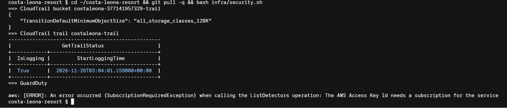

Pass 1 describes the system as it stood when the deployment first worked (2026-11-26, about 03:00 UTC): running and reachable, but before CloudTrail, the restore tests, log rotation and the runbook. I wrote it up afterwards from the evidence timeline, not in real time, and used it to decide what to build next. Pass 2 was made after the incident. Verdicts are my own assessment against the framework's questions; I did not use the AWS Well-Architected Tool.
Operational Excellence
Dashboard, 8 alarms to e-mail, request log with outcome and version, two scheduled automations, everything deployed by scripts in Git, a tested runbook. A fault was found, fixed and prevented.
Security
MFA on root and the IAM user; admin only through a temporary role; secrets in Parameter Store; CloudTrail; encryption at rest; reachable only via CloudFront; no SSH; IMDSv2. Gaps: MongoDB has no password (private network only), CloudFront-to-origin is HTTP, GuardDuty unavailable.
Reliability
Hourly backups, one tested database restore (25 s) and one tested content restore (versioning), alarms on CPU, status, disk, memory and errors. One server in one Availability Zone, no automatic failover.
Performance Efficiency
t3.small: CPU peaked at 40% and memory at 70% in the observed hour; average answer time 4.5 s (median 3.5 s) over 30 questions, dominated by the external model; alarm at a 10 s average.
Cost Optimization
Zero-spend budget alert created first; every resource tagged; smallest viable instance; 14-day log retention; S3 lifecycle on backups; free model tier; CloudFront price class 100. The public IPv4 address is billed but needed.
Sustainability
One small instance, no load balancer or database service, logs capped by retention and rotation (the runaway log was the incident), jobs limited to hourly. Shut-down plan documented.
What changed between the two passes
- Operational Excellence: adequate → good (runbook, log rotation, tested alert path).
- Reliability: gap → adequate (two restore tests).
- Security: stayed adequate. CloudTrail was added, but the Mongo and HTTP-origin gaps remain and GuardDuty could not be enabled.
